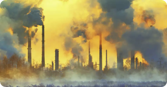
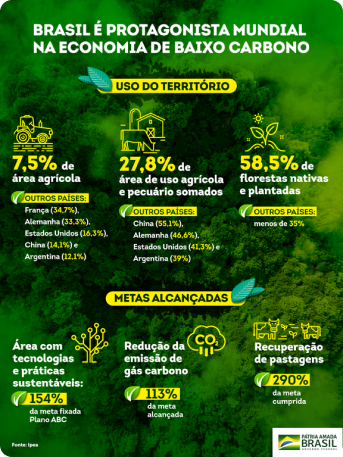
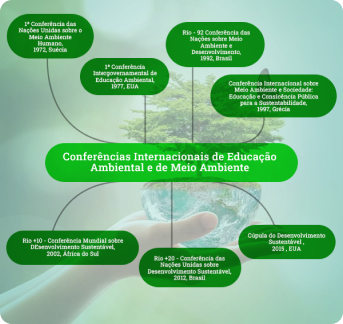

O Brasil na
Política Mundial Ambiental.
Qual a importância dos
recursos naturais
do Brasil?
Eles suprem a necessidade dos seres vivos, o que os torna extremamente
importantes à manutenção da vida.
Como é feita a gestão dos recursos naturais?
Entre as principais medidas para uma boa gestão de recursos naturais, são
estabelecidas políticas ambientais de preservação e recuperação de áreas
desmatadas ou degradadas, além de processos eficazes de reflorestamento e
exploração.
O que são recursos naturais em Administração?
Os recursos naturais são aqueles que se originam sem qualquer intervenção
humana.
Como é feita a administração dos recursos naturais?
É administrado pelo Instituto Brasileiro do Meio Ambiente e dos Recursos
Naturais Renováveis (IBAMA).
O que é
Poluição Industrial
?
A poluição industrial caracteriza-se pela emissão de resíduos poluentes na
natureza proveniente das atividades de uma empresa, ou seja, os processos
produtivos são os grandes responsáveis por lançar substâncias tóxicas no ar,
na água, na floresta, etc.

Quais são as medidas de controle da poluição?
Manutenção e criação de áreas verdes nos espaços urbanos, como bosques,
praças, parques e corredores verdes; Incentivar o uso de instrumentos que
minimizem as emissões de poluentes, como catalisadores automotivos, filtros
nas fábricas e usinas, tratamento de resíduos etc.
Principais
ações para reduzir a poluição industrial:
Diminua
a geração de
resíduos
sólidos;
Invista em fontes de
energia sustentável
;
Reduza
a produção de
gases poluentes
;
Evite
a utilização
de
papel
;
Realize o
tratamento correto dos efluentes
.
Quais os tipos de poluição industrial?
Abordaremos, a seguir, os principais tipos de poluição, destacando como eles
são gerados e como prejudicam a vida humana e dos demais seres vivos:
Poluição
atmosférica
;
Poluição
hídrica
;
Poluição
do solo
;
Poluição
térmica
;
Poluição
sonora e visual
;
Poluição
luminosa
;
Poluição
radioativa
.
O
Planejamento Territorial.
Planejamento Territorial é uma ação do poder público que, através de
legislação específica, estuda um determinado território para planejar a sua
ocupação futura.

Como ocorre o planejamento e ordenamento territorial brasileiro?
A Constituição do Brasil determina que o ordenamento territorial das cidades
seja feito por meio de “planejamento e controle do uso, do parcelamento e da
ocupação do solo urbano” (artigo 30, VIII ).
O principal objetivo do
planejamento urbano é planejar e construir espaços que diminuam os problemas
vindos da urbanização, como poluição, congestionamentos, impactos ecológicos
ou vazios urbanos
A Política Nacional do Meio Ambiente.
Também conhecida pela sigla PNMA, a Política Nacional do Meio Ambiente é tem
como objetivo geral a preservação, melhoria e recuperação da qualidade
ambiental propícia à vida, visando assegurar, no país, as condições ao
desenvolvimento socioeconômico, aos interesses da segurança nacional e à
proteção da dignidade e vida humana.
Qual o objetivo específico da PNMA?
A PNMA possui como objetivo a preservação, melhoria e recuperação da
qualidade ambiental propícia à vida, visando assegurar, no País, condições
ao desenvolvimento socioeconômico, aos interesses da segurança nacional e à
proteção da dignidade da vida humana.

Quais são os principais instrumentos da PNMA?
A PNMA destaca quatro tipos principais de políticas de controle ambiental ou
“modos de operacionalização”:
Negociação entre agentes
(barganhas)
;
Imposição
(padrões definidos por meio da legislação);
Taxação
e subsídios;
Mercado de
licenças de poluição
.